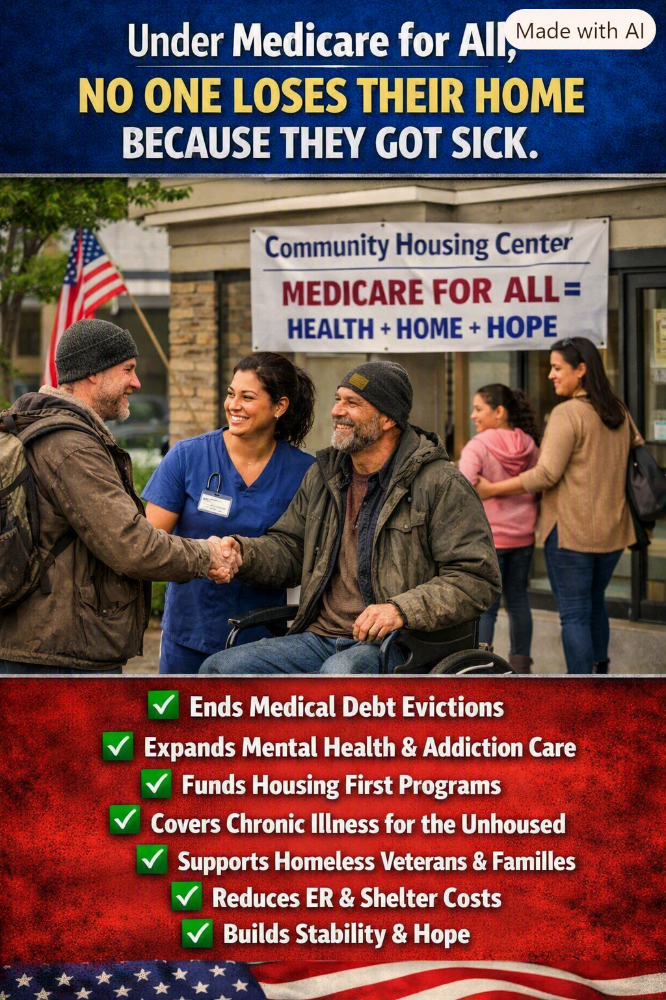

Article 39: No One Should Lose Their Home Because They Got Sick
Preventing medical debt from becoming housing insecurity

Download illustrated Word document (.docx)
How universal healthcare can help prevent medical debt, housing insecurity, and homelessness—and why housing policy must be part of the solution.
Illustration: A vision of healthcare and housing security working together. The image expresses policy goals, not benefits already guaranteed by existing Medicare for All legislation.
Illness Should Never Be a Pathway to Homelessness
A serious illness can change a family’s finances overnight. A hospital stay may be followed by deductibles, copayments, unpaid time away from work, travel costs, and ongoing treatment expenses. Even people who have health insurance can face bills that compete with the rent or mortgage. When health and housing become competing necessities, something is profoundly wrong with the way we organize care.
The central promise of Medicare for All is simple: people should receive medically necessary care without being forced to risk their financial security. A universal program with no premiums, deductibles, or copayments for covered services would remove a major source of medical-related financial pressure. It would not, by itself, eliminate every cause of homelessness—but it could remove one important contributor.
The Hidden Chain Reaction
The damage rarely stops at a medical bill. Illness may reduce a person’s ability to work. Lost income makes rent harder to pay. Debt collections can weaken a household’s finances. People may postpone medications or follow-up visits to preserve money for housing, only to become sicker and require more intensive care. Families already living paycheck to paycheck have the least room to absorb these shocks.
For people experiencing homelessness, the relationship also works in reverse. Unstable housing makes it harder to store medication, maintain hygiene, attend appointments, recover from surgery, and manage chronic conditions. Housing is not a luxury added after healthcare; stable housing often makes effective healthcare possible.
What Medicare for All Could Change
Replace unpredictable patient charges for covered medical services with universal, publicly financed coverage.
Improve access to primary care, mental health services, addiction treatment, medications, and ongoing chronic-disease care.
Reduce the pressure to skip treatment because of cost and help people seek care before preventable conditions become emergencies.
Allow workers and families to keep healthcare coverage when employment or income changes.
Make it easier for unhoused people to receive continuous care without having to navigate competing private insurance plans.
Healthcare Alone Cannot Guarantee a Home
An important distinction matters: Medicare for All is a healthcare financing proposal, not automatically a housing program. It would not independently pay everyone’s rent, erase existing medical debt, guarantee housing, or fund Housing First programs unless separate provisions and appropriations did so. And although broader access to care may reduce some avoidable emergency costs, the size of any savings depends on the program’s design and implementation.
If our objective is that no American lose a home because of illness, universal healthcare should be paired with paid medical leave, disability income protections, affordable housing investment, eviction prevention, medical-debt relief, and supportive housing. For people with complex health needs, Housing First and coordinated health services can provide a more stable foundation for recovery.
A Better Measure of Success
We should judge healthcare policy not only by what it spends, but by what it makes possible: a patient who completes treatment, a family that stays together, a veteran who receives coordinated care, a person in recovery who finds stability, and a child whose home remains secure during a parent’s illness.
No one should have to choose between treatment and a roof overhead. We can design a system that treats healthcare as a public responsibility and housing stability as a shared priority. The goal is not merely to pay medical bills more efficiently. It is to protect people’s ability to heal, recover, work, and live with dignity.
The Way Forward: Health + Home + Hope
Medicare for All can be a foundational part of a broader strategy to prevent medical hardship. Paired with practical housing and income policies, it can help break the cycle in which illness causes financial instability and financial instability worsens illness. The measure of a compassionate, effective society is whether people get the care they need—and have a safe place to recover.
Policy note: This article advocates a proposed universal healthcare model. Exact covered benefits, financing, housing supports, and patient cost-sharing would depend on legislation enacted and implemented.
Share This Article
Help others explore the ideas and evidence behind Medicare for All.
When posting on Facebook, paste these hashtags into your post text. Sharing services may not automatically include them.